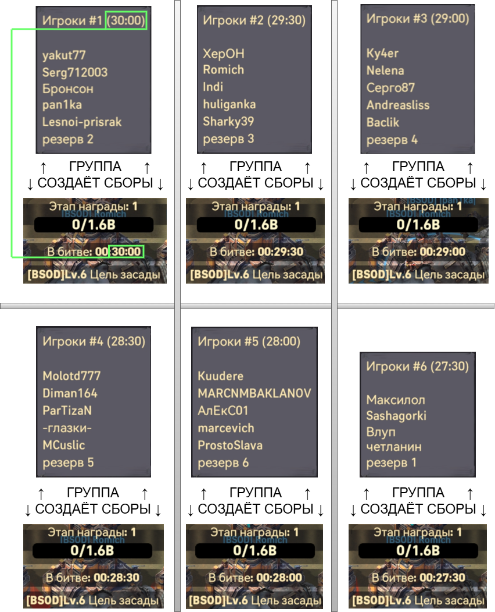
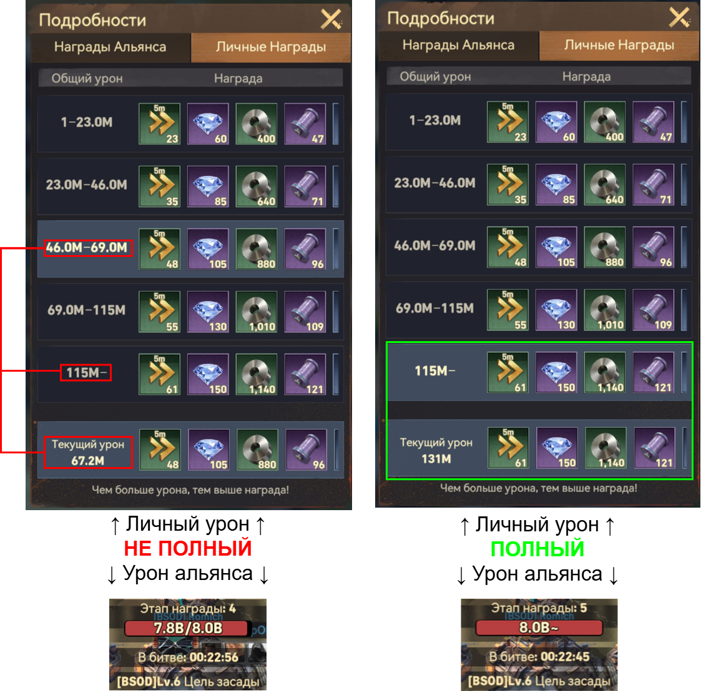
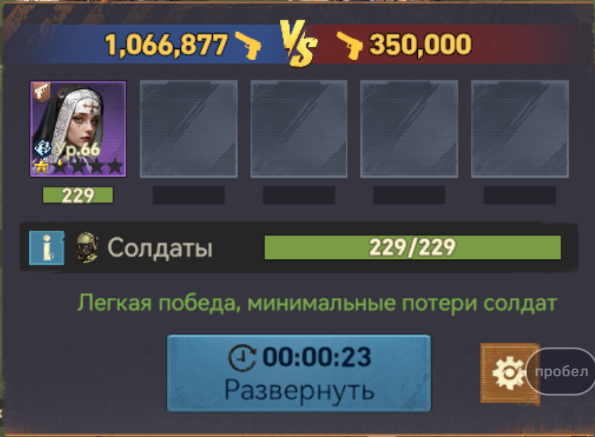
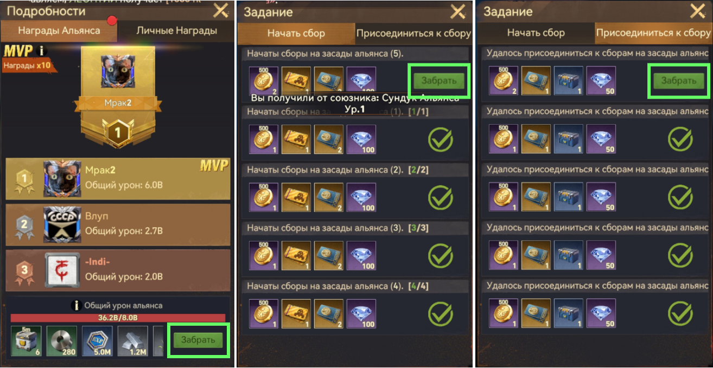

← Вернуться на главную
Порядок действий при засаде
📋 Назначение групп происходит в чате согласно времени засады
30:00 29:30 29:00 28:30 28:00 27:30
🎯 Если ты в группе:
Вторым отрядом создавай сбор по своему времени над целью засады (название группы, см. картинку). Когда второй отряд вернулся — создавай сбор снова. Необходимо создать не менее пяти сборов для получения награды.
➕ В каждой группе также оставляется резервное место, которое можно занять, если ты не отметился в опросе или принял решение поучаствовать в сборах.
⚡ ВАЖНО - создание сборов на засаду НЕ расходует энергию.

⚔️ Все игроки:
Сразу со старта засады заходи в самый верхний сбор в списке первым отрядом. После возврата первого отряда снова присоединяйся к сбору. Необходимо присоединиться к сборам не менее пяти раз для получения награды.
💡 Рекомендация:
Создавай и присоединяйся к сборам не только по пять раз, а до тех пор, пока не будут закрыты общий урон альянса и личный урон (см. картинку). Это тоже влияет на награды.

🛡️ Экономия войск:
Для экономии войск необходимо оставить во втором отряде только одного (желательно, слабейшего) героя (см. картинку).

🎁 Где забирать награды
- Общую — на экране с MVP.
- Личную — на почте.
- За сборы и присоединение к ним — на странице "Засада" в разделе "Инцидент".

🏠 На главную